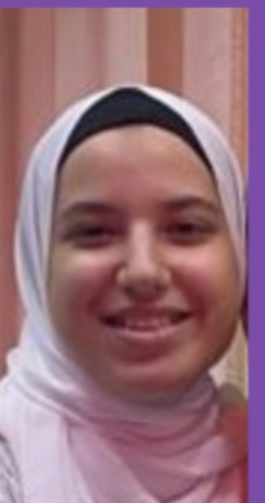

About Me
My name is Khadiga Yehia . I am 19 years old. My birthday is on the 8th of september. I am from Egypt. I have 5 siblings - 3 girls and 2 boys. My favorite hobby is crochet. My favorite sport is swimming. I studied most of my years in Egypt and recently came to Canada. I speak Arabic and English. When I first came to Canada, I studied in person for a year and a half, and after that, when COVID 19 came, I continued in VLE. I want to be a web designer and graphic designer after graduation. I love learning very much, and learning more, and trying things that I don’t know because This is what could change the path of my life.
To learn something new, you need to try new things and not be afraid to be wrong. -Roy T. Bennett
One of the goals that I achieved during the past period, which was very interesting, is that I joined a Bazar(it is like selling in multiple markets or plaza complexes) recently, and this was one of the very enjoyable things for me. I offered some of the desserts and pastries that I make and found a reasonable demand for them. One of my goals that I want to achieve after graduation, work with my degree and collect a lot of money, that I want to open a food business.
One of the interesting things for me is traveling and exploring places. I came to Canada about 5 years ago, and this was a completely different experience. Also, since I came to Canada, I have traveled twice to Egypt. Additionally, When I was young, I traveled to Saudi Arabia 3 times. For me, traveling means that I feel like I am in another world. Every country I went has different cultures, civilizations, places, atmospheres, and vibes. Moreover ,I love civilizations, nature, and cultures very much. Additionally, I enjoy learning new things when I visit different countries and trying new experiences.